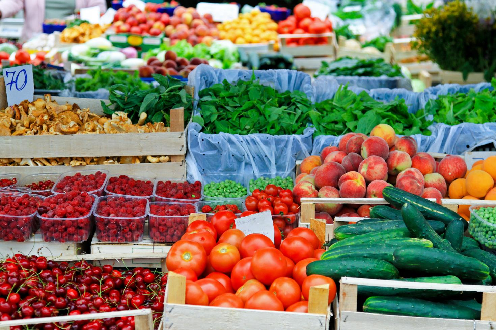
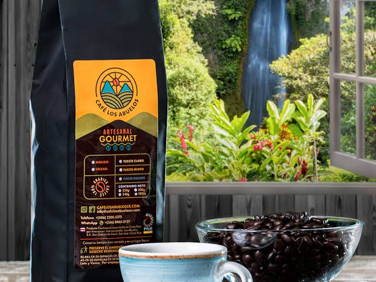

Productos agrícolas
Frutas tropicales y otros productos agrícolas forman parte de la oferta exportadora.
Conocé los productos y servicios costarricenses que llegan a diferentes mercados del mundo.
Costa Rica participa en el comercio internacional con productos agrícolas, dispositivos médicos y servicios.

Frutas tropicales y otros productos agrícolas forman parte de la oferta exportadora.
Empresas instaladas en Costa Rica producen dispositivos y equipos para el sector de la salud.
El desarrollo de software y los servicios empresariales también llegan a otros países.

El café es uno de los productos tradicionales reconocidos de Costa Rica.
Costa Rica mantiene relaciones comerciales con diferentes países y participa en cadenas de valor internacionales.
Las exportaciones contribuyen a generar oportunidades para empresas y trabajadores.
Descubrí por qué Costa Rica es un destino para la inversión y el desarrollo empresarial.
Ver inversión